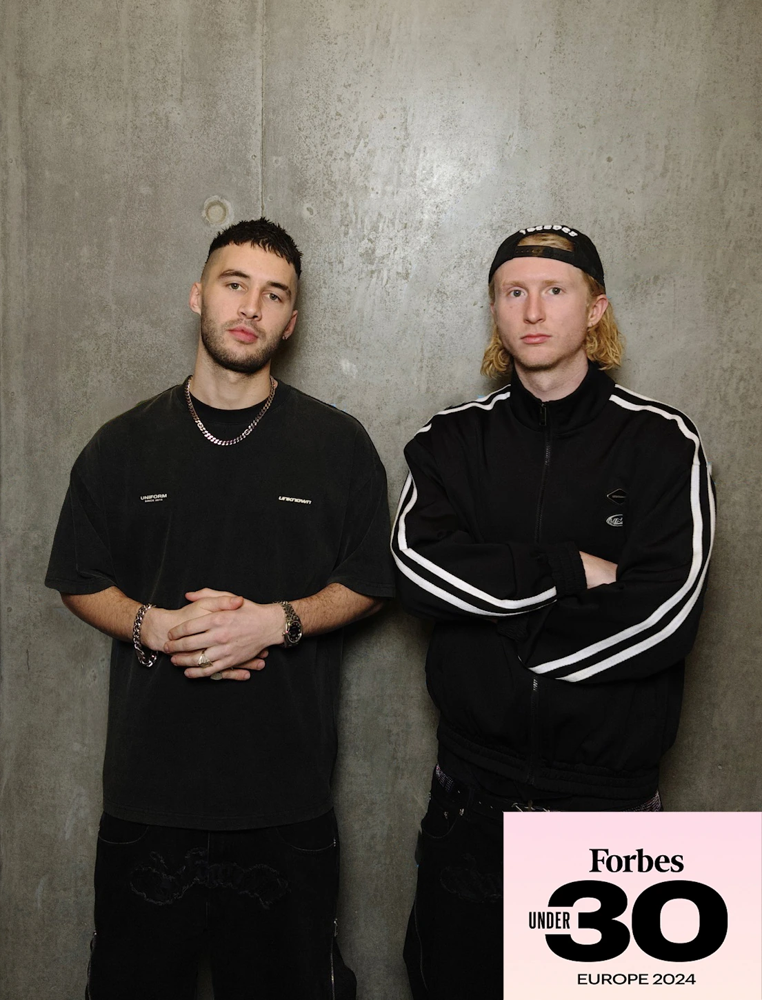

Room Nine’s reputation for being able to quickly turn around large amounts of product made them the perfect partner to complete our cast and crew pieces for Surface.
With a large crew, busy schedule and tight time constraints, they had to work fast to present multiple design and budget options—then have everything approved, produced and delivered before wrap.
We’ll continue to partner with them on upcoming productions and look forward to many more projects together.
Room Nine Studios / London
Built by doing.
Thirteen years of making, launching, scaling, learning and doing it again.
From one brand to every part of the journey.
Joe Granger and Callum Vineer spent ten years at the helm of cult streetwear brand Unknown London, building the product, audience and infrastructure from the ground up.
That meant designing the collection, finding factories, managing samples, producing campaigns, opening stores, touring countries, building wholesale, running ads, packing orders and keeping the whole thing moving.
Room Nine was created to bring that joined-up experience to a carefully selected group of brands, artists and organisations. We are equally comfortable shaping the first idea, solving the production challenge or delivering the launch in the real world.

CapabilitiesEnd-to-end
01
Brand & Creative
Positioning, identity, campaign platforms, art direction, social systems and creative worlds designed to hold together.
02
Product
Design, tech packs, sampling, cost engineering, product development and manufacturing across apparel, accessories and objects.
03
Content
Campaigns, editorial, film, social, lookbooks, global production and AI-supported concept development.
04
Culture
Talent, creator casting, collaborations, seeding, events, pop-ups and community-led experiences.
05
Growth
Wholesale strategy, paid media, launch planning, conversion thinking and commercial direction.
06
Operations
Factory management, freight, warehousing, Shopify operations, customer service and global fulfilment.
Client wordsSelected productions
Room Nine are a pleasure to work with and make the process completely fuss-free. They delivered within budget without compromising on quality, and everything produced feels genuinely wearable.
They’re particularly strong at carrying a show’s identity consistently across multiple products.
The team behind Room Nine immediately understood why Rizla and Unknown belonged together. They took the partnership beyond co-branded product, combining a strong collection with a UK helicopter tour that brought it directly to the community.
Its success led to a second global project, five times the scale, the following year.
Work with Room Nine
One partner. No gaps.
London / WorldwideStart a project ↗︎